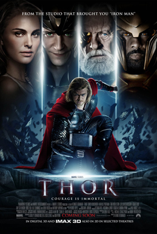
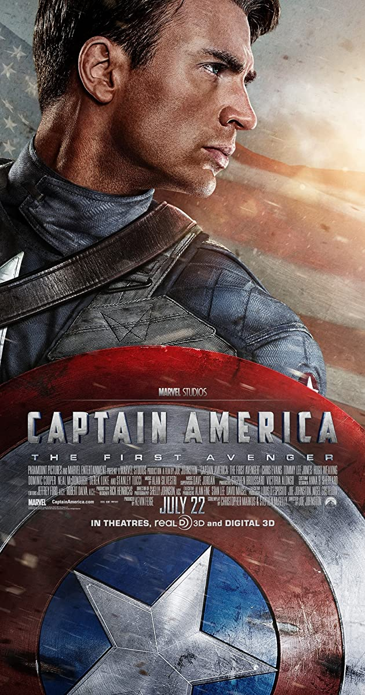

Thor
Film 'Thor' mengisahkan seorang keturunan dewa yang memiliki kekuatan dan dilengkapi dengan sebuah palu berkekuatan dahsyat. Berbeda dengan film-film superhero Marvel lainnya, Thor mendapatkan kekuatannya tidak dari kemajuan teknologi. Thor adalah anak pertama dari Odin dan Frigga, raja dan ratu di Asgard.
The Hulk
Film Hulk bercerita tentang asal-usul Bruce Banner, yang setelah kecelakaan laboratorium radiasi gamma, dirinya mampu berubah menjadi monster besar berkulit hijau setiap kali ia terpancing atau tertekan secara emosional akibat ulah ayahnya sendiri.

Captain America
FFilm 'Captain America: The First Avengers' rilis pada 9 Juli 2011. Captain America menjadi Avengers yang pertama sebelum adanya superhero-superhero lain di Marvel Cinematic Universe (MCU). 'Captain America: The First Avengers' mengambil latar waktu pada 1942.
Kunjungi web nonton Streaming kami.
Nonton streaming Thor Nonton streaming The Hulk Nonton streaming Captain America